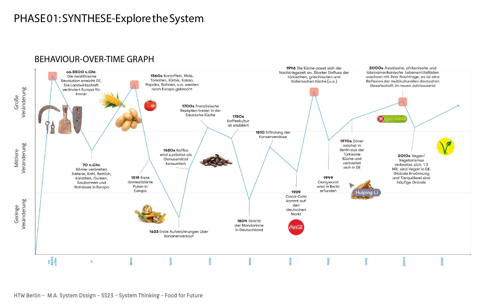
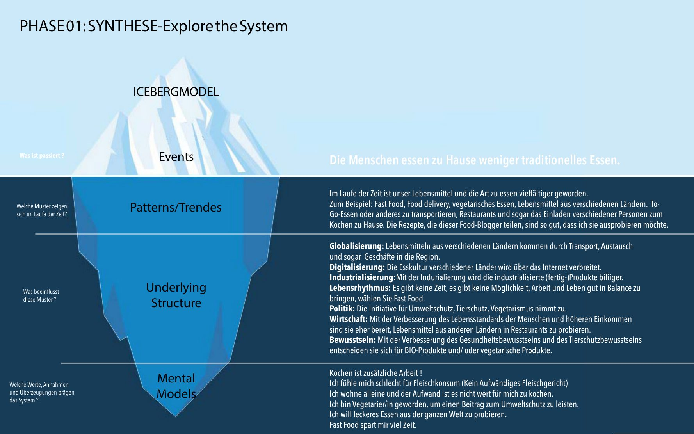
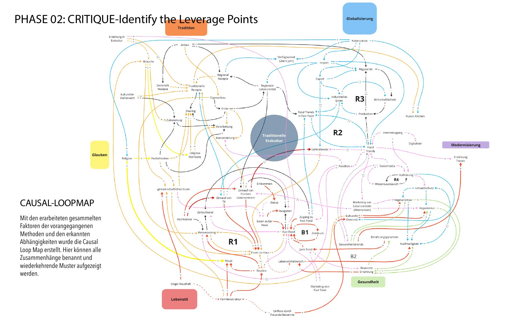
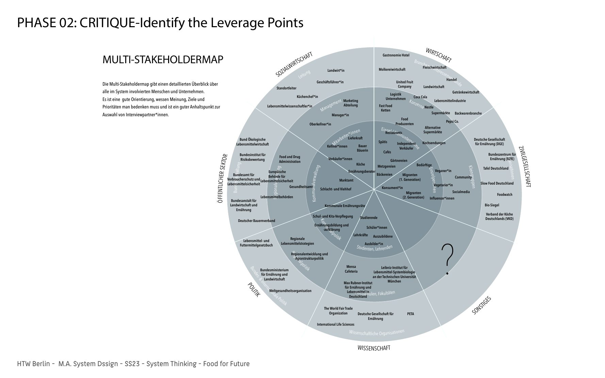
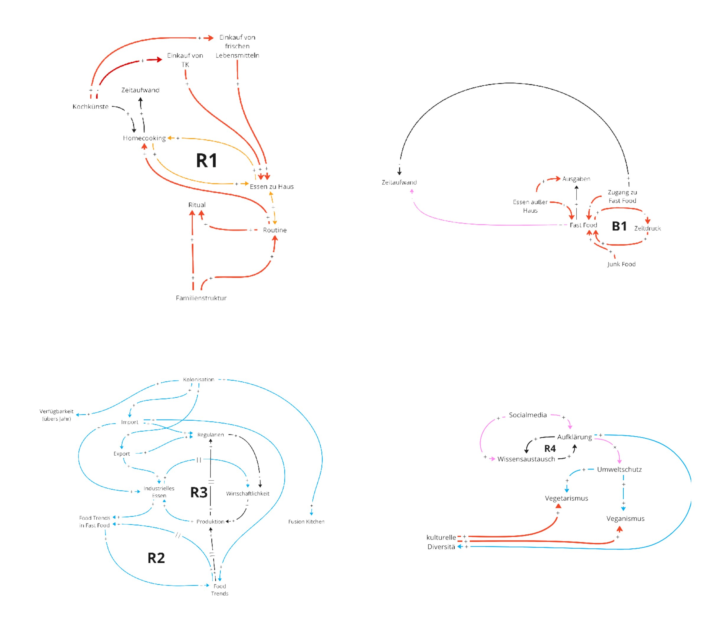
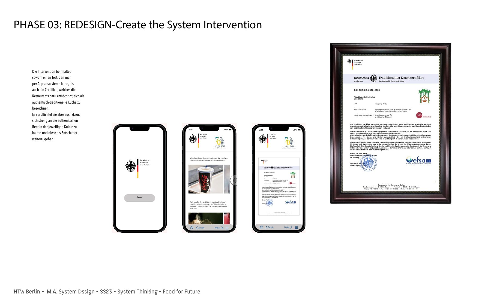
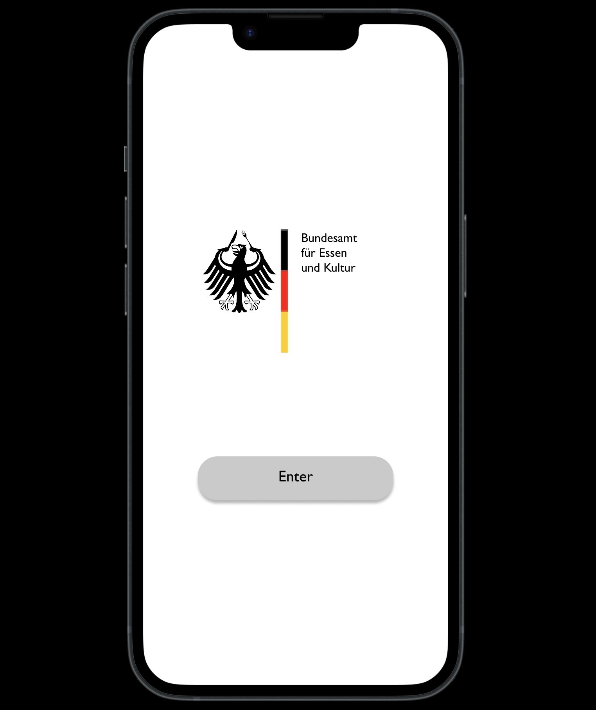
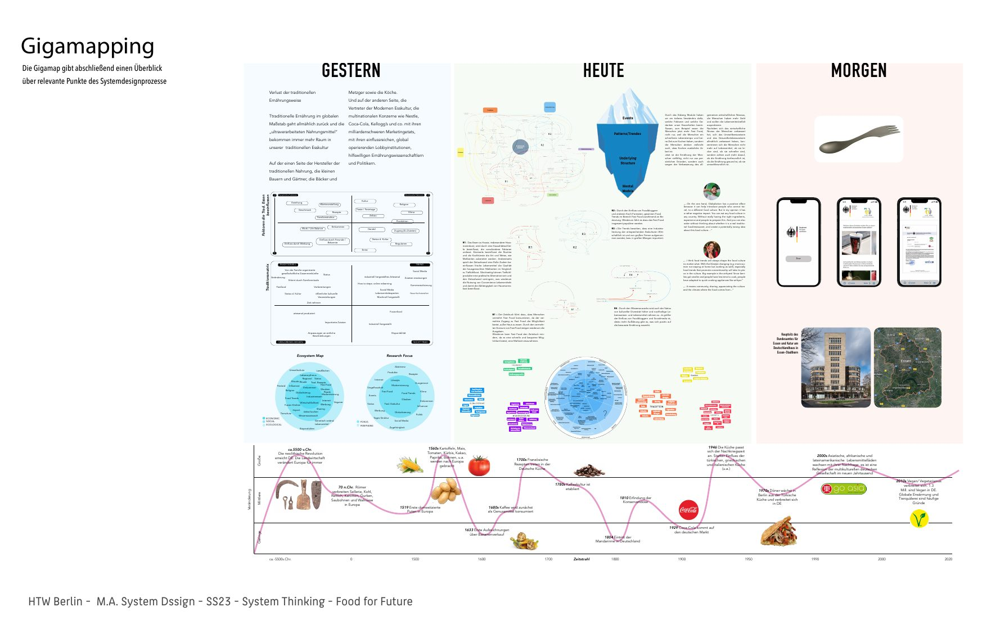

Loss of traditional diets
Traditional diets are declining worldwide, while ultra-processed foods increasingly replace traditional eating habits and cultural food practices. This shift affects health, and it also disrupts the ecological and social systems connected to food production and consumption. In a group of five students, we explored the dynamics behind this transformation in three phases.
1. Explore the system
We started by naming the problem and the forces that keep it in place, from small farmers, bakers and cooks to global food corporations, and asked what shapes traditional food culture. Behaviour-over-time graphs and the iceberg model helped us move from visible events to the underlying structures and mental models.


2. Identify the leverage points
Causal loop maps showed how globalisation, convenience and marketing reinforce each other. A multi-stakeholder map and interviews with students and food businesses helped us find where an intervention could shift the system.


The causal loop map shows more than connections and dependencies. Above all it shows the loops that sustain, reinforce or balance themselves. These are the main ones we worked out:

- R1, cooking at home: routine, cooking skills and the time it takes shape how meals are made. Fresh food raises the quality of homemade meals, while frozen and convenience food saves time and weakens the habit of home cooking.
- B1, time pressure: people under time pressure eat more fast food, made easy by more places to eat out. Spending rises, but fast food also eases the time pressure, which balances the loop.
- R2, food trends: food bloggers and cooking formats make fast food trends more important, which makes fast food more popular overall.
- R3, industrialisation: trends make it profitable to industrialise a food culture, so large companies take it up or import it in large quantities.
- R4, knowledge: as people learn more, cultural diversity gains status and sustainable ways of living and eating grow. The bigger the reach of food bloggers and social media, the more people learn, which supports more conscious eating.
3. Create the intervention
The intervention combines a test, taken through an app, with a certificate that authorises restaurants to call themselves authentic traditional cuisine. In return, they must strictly follow the authentic rules of their culture and act as ambassadors for preserving and passing them on.

App concept
We developed an app that critiques German bureaucracy and its rigid approach to foreigners, while highlighting the decline of traditional food culture. It deliberately mimics the confusing layout of government websites, mirroring the hurdles foreigners face in Germany.
The satirical certification test asks who defines authenticity, and whether strict rules preserve cultural diversity or restrict it. It also challenges how, in a globalized world, we often assume we understand other cultures’ traditions when our perceptions are shaped by stereotypes and simplifications. The project raises the paradox of rigid standards versus the natural evolution of food traditions, to provoke discussion on bureaucracy’s role in culture, the commodification of authenticity, and the illusion of cultural knowledge.

Gigamap
The gigamap brings the whole process together: yesterday, today and tomorrow of traditional food culture, with our research and intervention on one sheet.

Learnings
One of my main learnings was applying behaviour-over-time analysis to this research. It showed us how much globalisation has shaped food culture over the years, and let us see the moment we are in now as one of many shifts that have happened before.
The time spent making food represents much more than something that nourishes you. It is also storytelling, preparation, rituals, connection, and passing culture on to younger generations. Analysing this systemically also made us question our own cultures, and how we eat and share food.